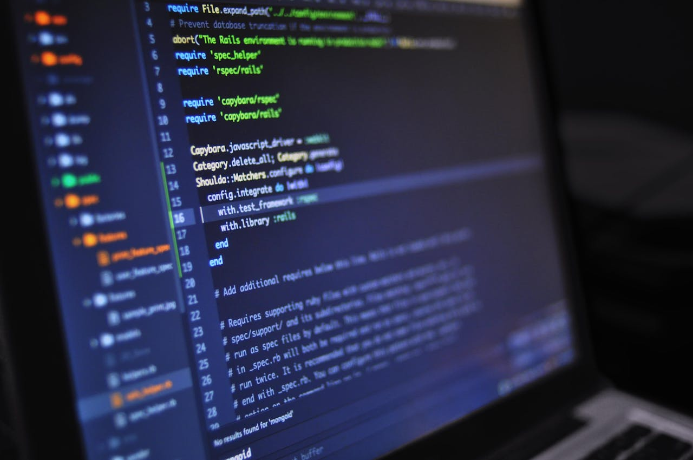

What is software technology? Software technology is the digital code that runs on devices to perform functions like running browsers, operating systems, and productivity software the use of computer systems or devices to access information. Information technology is responsible for such a large portion of our workforce, business operations and personal access to information that it comprises much of our daily activities. Software Technology refers to the digital computational code that runs on hardware devices, enabling them to perform various functions such as running operating systems, browsers, and productivity software like Microsoft Office and email clients.
Software technology is the digital code that runs on devices to perform functions like running browsers, operating systems, and productivity software.
Python: A high-level, general-purpose language that’s popular for web development and data science. It’s open-source, so programmers can customize the source code.
Cloud computing: A trending software development technology.
JavaScript: A popular software development technology.
Low-code and no-code: A trending software development technology.
Decoupled architecture (microservices): A trending software development technology.
Blockchain: A trending software development technology
Software is a generic term for applications, scripts, and programs that run on a device. It can be thought of as the variable part of a computer, while hardware is the invariable part.

System software is a type of computer program that runs a computer’s hardware and application programs. The operating system is a well-known example of system software. Software tools are computer programs that developers use to create, maintain, debug, or support other applications and programs information technology software means any representation of instructions, data, sound or image, including source code and object code, recorded in a machine readable form, and capable of being manipulated or providing interactivity to a user, by means of a computer or an automatic data processing machine or any other How does a software work? Basically, when you install a program onto your computer or device it has instructions on what needs to be done for the program to run correctly. When these instructions are followed by your computer or device it is known as “executing” the code.
general-purpose programming language that is used to develop system software, application software, and embedded systems: C is a procedural language that provides low-level access to system memory. It’s also known for being fast, versatile, and having similar syntax to other popular programming languages. C is used to write many versions of Unix-based operating systems, and it runs on many different hardware platforms and operating systems. C is considered a good language to learn if you want to get into other programming languages, such as C++.
Object oriented design. Introduction to OOP in C++ Classes and Objects. Access Modifiers. Inheritance. Polymorphism. Encapsulation. Data Abstraction. C++ is a cross-platform language that can be used to create high-performance applications. C++ was developed by Bjarne Stroustrup, as an extension to the C language. C++ gives programmers a high level of control over system resources and memory. The language was updated 4 major times in 2011, 2014, 2017, and 2020 to C++11, C++14, C++17, C++20. C++ is one of the world’s most popular programming languages. C++ can be found in today’s operating systems, Graphical User Interfaces, and embedded systems.
Java is a programming language, and full stack Java is a type of development that uses Java to create both the front-end and back-end of a web application: Java – A programming language that is used to develop and manage software and applications. Java is used by many large organizations for their backend services and software systems. However, it can be challenging for beginners to learn because of its verbose syntax, object-oriented paradigm, and advanced concepts. Full stack Java – A type of development that uses Java to create both the front-end and back-end of a web application. This involves using Java for the server-side, and front-end technologies like HTML, CSS, JavaScript, and frameworks like Angular.
Python full-stack developer is a web developer who uses Python as their main programming language to handle all aspects of building a web application. They build the user interface that is the front end as well as the back end of the website where server logic is stored using Python A general-purpose language that’s used for a wide range of applications, including web development, data science, machine learning, and artificial intelligence. Python is known for being simple, versatile, and easy to learn. It’s an open-source, interpreted, and dynamically typed language. Functions. Functions are building blocks in Python. … Positional and keyword arguments. … *args and **kwargs. … 10 Examples to Master *args and **kwargs in Python. … Classes. … Lists. … 11 Must-Know Operations to Master Python Lists. … List comprehension.
Oracle is a multinational corporation that develops and sells database software, cloud systems, and enterprise software. Oracle’s products help businesses manage and organize their data. Here are some of Oracle’s products and services: Oracle Database – A collection of data organized by type, which can be used for storing and retrieving related information. Oracle Database can be deployed on-premises, in the cloud, or in a hybrid cloud. Oracle Cloud – A cloud infrastructure platform that offers services for building, running, and migrating IT. Oracle Cloud@Customer An on-premises cloud offering that provides the same services as Oracle’s public cloud, but runs from a customer’s data center. Oracle Inventory Management System A part of Oracle’s supply chain management software that provides visibility into the flow of goods across an organization’s supply chain.
HTML (HyperText Markup Language) and CSS (Cascading Style Sheets) are the foundational technologies for creating web pages. HTML provides the structure, while CSS defines the style and layout. HTML is used along with CSS and Javascript to design web pages. Structure: HTML provides the basic structure of a webpage, defining the layout and hierarchy of content using elements such as headings, paragraphs, and lists. Content: HTML is used to add various types of content to a webpage, including text, images, videos, and audio. Links: HTML is used to create links between different pages and websites, allowing users to navigate the web. Forms: HTML is used to create forms that allow users to input data, such as contact information or search queries.
SQL stands for Structured Query Language, and it’s a programming language used to store and process information in relational databases. SQL is used to create, update, retrieve, and remove data from a database, as well as to optimize database performance. SQL stands for Structured Query Language SQL lets you access and manipulate databases SQL became a standard of the American National Standards Institute (ANSI) in 1986, and of the International Organization for Standardization (ISO) in 1987. SQL can execute queries against a database SQL can retrieve data from a database SQL can insert records in a database SQL can update records in a database SQL can delete records from a database SQL can create new databases SQL can create new tables in a database SQL can create stored procedures in a database SQL can create views in a database SQL can set permissions on tables, procedures, and view…
Digital marketing is the use of digital channels to promote a brand and connect with customers. Digital marketing can include: Search engine optimization (SEO) Optimizing a website’s content and technical setup to appear at the top of search engine results Social media marketing Promoting a business on social media platforms like Facebook, Twitter, Instagram, YouTube, and TikTok Pay-per-click (PPC) An online advertising method where a business only pays when someone clicks on their ad Email marketing Sending promotional content directly to potential customers via email Digital marketing is a broad term that encompasses many different channels, including online and offline methods. For example, digital billboards, mobile SMS marketing, and on-demand television advertising are all considered digital marketing.
This course will provide Software development basic’s and knowledge. Candidate would be provided basic knowledge of code developing maintenance. Candidate would also be able to use Coding developer. Web development is the process of creating, building, and maintaining websites and web applications. It involves a variety of tasks, including- Design: The layout and look of the website Coding: Using programming languages like HTML, CSS, and JavaScript Coding: Using programming languages like HTML, CSS, and JavaScript Content creation: Adding content to the website Functionality: Ensuring the website works as intended Connecting to a server: Linking the website to a server Web development can be broken down into two areas: front-end and back-end: Front-end – The user-facing side of the website, which includes the user interface (UI). Front-end developers use HTML, CSS, and JavaScript.
App development is the process of creating and releasing software applications for various platforms, such as mobile devices, desktop computers, and web browsers. The process can include: Planning: Identifying the need, setting objectives, and conducting market research Design: Creating the application’s architecture and design, including UI and UX Development: Coding and building the application using relevant programming languages and tools Testing: Testing the application on target devices Deployment: Releasing the app Ongoing improvements: Continuing to develop and improve the app indefinitely App development can help businesses automate processes and increase efficiency. It can also improve user experience and enable digital transformation. The country where the app is being developed can be a factor in the development process due to labor laws and production variables. Cross-platform technologies can help developers save time by writing code once and releasing it to multiple platfroms.
VMware is a virtualization and cloud computing company that offers a variety of products and services, including. Virtualization: VMware virtualizes physical computers using a hypervisor, which is a thin layer of software that allocates resources to other operating systems. Networking and security management tools: VMware offers networking virtualization and load balancing for data centers and clouds Cyber Security – Cybersecurity is the practice of protecting systems, networks, and programs from digital attacks. These attacks can aim to: Access, change, or destroy sensitive information Extort money from users via ransomware Interrupt normal business processes Some types of cybersecurity include: Network security Protects internal computer networks and network components from cyberattacks. Network security professionals ensure that data sent to devices through networks is not altered or corrupted.
Personality development. Effective Communication skills play a crucial role in honing one’s personality. Communication helps individuals to express themselves in the most convincing way. Your thoughts, feelings and knowledge should be passed on in the most desirable manner and effective communication skills help you in the same.❖ Smile a lot. ❖ Think positive. ❖ Dress Sensibly. ❖ Be soft-spoken. ❖ Leave your ego behind. ❖ Avoid Backbiting- Backstabbing and criticizing people are negative traits which work against an individual’s personality. ❖ Help other. ❖ Confidence. ❖ A Patient listener. ❖INTERVIEW SKILLS. Personality development is the process of developing and improving one’s personality traits, thoughts, and behaviors. It can help people build their identity, improve their communication skills, and gain confidence and self-esteem.
App development is the process of creating and releasing software applications for various platforms, such as mobile devices, desktop computers, and web browsers. The process can include: Planning: Identifying the need, setting objectives, and conducting market research Design: Creating the application’s architecture and design, including UI and UX Development: Coding and building the application using relevant programming languages and tools Testing: Testing the application on target devices Deployment: Releasing the app Ongoing improvements: Continuing to develop and improve the app indefinitely App development can help businesses automate processes and increase efficiency. It can also improve user experience and enable digital transformation. The country where the app is being developed can be a factor in the development process due to labor laws and production variables. Cross-platform technologies can help developers save time by writing code once and releasing it to multiple platfroms.
A scripting language that’s primarily used for web development, especially server-side scripting and PHP, or Hypertext Preprocessor, is an open-source scripting language used for web development. It’s embedded into HTML and used to create dynamic content on web pages When a user requests a page, the web server runs the PHP script, which generates HTML. The HTML is then sent to the user’s browser. PHP is known for being simple, fast, and flexible. It’s also easy for beginners to learn, but offers advanced features for more experienced programmers. PHP is used to create dynamic content, interact with databases, and customize websites. PHP originally stood for “personal home page”, but is now a recursive acronym for “hypertext preprocessor database integration. PHP is object-oriented, case-sensitive, and platform independent. It’s compatible with many Apache and IIS servers, and runs on Windows, Unix, Linux, and Mac OS X. Check Out For More Details Enroll Now to the courses and get places in Companies.